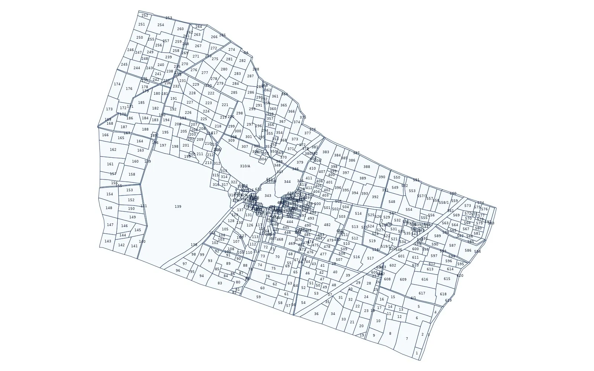

Madhya Pradesh khasra map: how to read it with the khasra and B-1 records

In Madhya Pradesh, every agricultural plot in a village has a khasra number. The same number appears on the village map, which shows where the plot lies, and in the written land records, which say what the plot is and who holds it. People usually need both, for example to find a plot in the field, to check a sale, or to plan a project across many villages. This guide explains how to read the map, how to connect it with the records, and what to do when you need the plot on a satellite image or in a GIS file.
1. Where the map comes from
Village maps in Madhya Pradesh come from land settlement surveys and are kept up to date by the revenue department. In the field, the patwari keeps the records of a patwari halka (a group of villages), with the revenue inspector circle and the tehsil above. The record kept by the revenue office is what counts in a transaction.
2. The numbers that identify a plot
- Village: the revenue village. The same khasra number exists in every village, so always note the village and tehsil with it.
- Khasra number: the number of the plot on the map and in the khasra record.
- Sub-division: when a plot is divided, the parts get numbers such as 245/1 and 245/2, and a part can be divided again, such as 245/1/2.
- Khata number: the account of one holder or a group of joint holders, which can cover several khasras.
3. Reading the map
Each closed shape is one khasra, with its number inside or, for a very small plot, beside it. Roads, cart tracks, streams, ponds and the abadi (the inhabited part of the village) are drawn too. A track or channel usually has its own khasra number and does not belong to the holders on either side, which matters when you plan access to a site or check a boundary. A recently divided plot may still appear as one shape on an older sheet.
4. Linking the map to the khasra and B-1
The map shows where a plot is, not who holds it. Two records answer that. The khasra record is plot-wise: for each khasra number it gives the area, the holder, the land use and other entries. The B-1 (khatauni) is holder-wise: it lists all the khasras under one khata. So start from the map, take the khasra number and the village, and open the khasra record of that same village; use the B-1 when you start from a holder and want to see all of that holder's plots. Mutation (namantaran) after a sale, inheritance or partition updates the records, so always read the current copy.
5. Government land entries
The records also show land that is not privately held, such as land recorded in the name of the state, and land set aside for village needs like grazing (charnoi), paths, ponds or the cremation ground. These entries decide what can be done with the land, so read the current record and take advice from a revenue professional before relying on them. Our guide on checking government land in a village covers the wider method.
6. Units of area
Madhya Pradesh records generally give area in hectares, where 1 hectare is about 2.47 acres. People on the ground often speak in acres or bigha, and the bigha differs from region to region. Always convert from the recorded value, not from a spoken figure, and state the conversion you used in any land schedule.
7. Why a viewer map is not yet a GIS map
A map on a screen is good for finding a plot, but it is not a file you can open with GPS points or a project layout. For that, the map must be georeferenced, meaning fitted to real coordinates such as WGS 84 latitude / longitude or UTM metres, and each khasra digitized as a closed polygon carrying its number. The result should be checked on satellite imagery across the whole village: field edges, tracks and streams on the image should run along the plot lines.
8. Common uses
- Seeing a khasra on a satellite image in Google Earth
- Checking which khasra numbers fall inside a proposed solar, wind or industrial site
- Listing the plots crossed by a road, pipeline or transmission line route
- Preparing a khasra-wise land schedule with village, area and land type
9. Limits to keep in mind
The map shows the record as drawn. Recent divisions and new roads may not be on it yet, and the maps of neighbouring villages do not always agree exactly along their shared edge. A digitized map is a planning base, not proof of title. The revenue record remains the legal source, and where a line decides ownership or compensation, a DGPS or Total Station survey on the ground is the next step.
10. What we deliver
We turn the Madhya Pradesh village map into a georeferenced GIS file: every khasra as a numbered polygon, checked against satellite imagery, with the village boundary inside the same files, in KML for Google Earth, DWG / DXF for AutoCAD, SHP for QGIS or ArcGIS and an Excel list of plots and areas. BHU-NETRA Map Service is a private service and is not connected with any state government.
See the Madhya Pradesh khasra map page, check your village with the village checker, read land-record terms of each state and how to open a khasra KML in Google Earth, or ask for a quotation.
Need khasra maps or a survey?
Georeferenced and digitized khasra maps in KML, DWG, SHP and Excel for 20 states, plus DGPS, Total Station, topographic and drone surveys. Single village orders welcome.